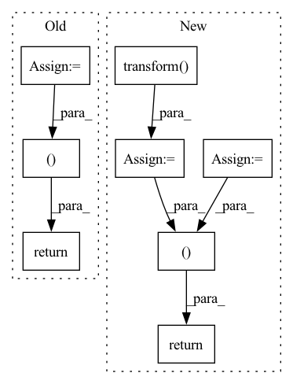

Pattern ID :24485
Before Change
// The first item in tuple is the image.
img_path = self.file_list[idx][0]
img = Image.open(img_path).convert("RGB")
img_transformed = self.transforms(img)
// The second item in the tuple is the label.
label = self.file_list[idx][1]
return img_transformed, label
def get_transform(self):
Default transform
After Change
def __getitem__(self, idx):
img_path = self.file_list[idx][0]
fname = img_path.split("/")[-1]
img = Image.open(img_path).convert("RGB")
img = self.transform( img)
label = self.file_list[idx][1]
return img, label, fname
def default_transform(self):
transform = transforms.Compose([
transforms.Resize((self.shape, self.shape)),In pattern: SUPERPATTERN
Frequency: 3
Non-data size: 8
Instances Fragment ID: 76028906
Project Name: tuttelikz/farabio
Commit Name: 3a9ce81c4089b3eec381ed7f300bf7d2dcd0405c
Time: 2021-07-29
Author: s.askaruly@gmail.com
File Name: farabio/data/biodatasets.py
M Class Name: RANZCRDataset
N Class Name: RANZCRDataset
M Method Name: __getitem__(2)
N Method Name: __getitem__(2)
M Parent Class: Dataset
N Parent Class: Dataset
M File Name: farabio/data/biodatasets.py
N File Name: farabio/data/biodatasets.py
M Start Line: 510
M End Line: 516
N Start Line: 492
N End Line: 500
Before Change
time_stamps: Optional[Tensor] = self.time_stamps[start:end]
else:
time_stamps = None
return (X, y, bias, time_stamps )
After Change
time_stamps: Optional[Tensor] = self.time_stamps[start:end]
else:
time_stamps = None
X = self.X_scaler.transform( X)
y = self.y_scaler.transform(y)
bias = self.y_scaler.transform(bias)
return (
X,
y,
bias,
time_stamps,
self.X_scaler.inv_transform,
self.y_scaler.inv_transform ,
)
Fragment ID: 76028907
Project Name: takuyashintate/tsts
Commit Name: e952ef63302c29b32c95e17f46dfcaabd2ad1b85
Time: 2021-09-14
Author: kmdbn2hs@gmail.com
File Name: tsts/datasets/dataset.py
M Class Name: Dataset
N Class Name: Dataset
M Method Name: __getitem__(2)
N Method Name: __getitem__(2)
M Parent Class: _Dataset
N Parent Class: _Dataset
M File Name: tsts/datasets/dataset.py
N File Name: tsts/datasets/dataset.py
M Start Line: 79
M End Line: 93
N Start Line: 104
N End Line: 121
Before Change
X = self.data.drop(self.target_col, axis=1)
y = self.data[self.target_col]
self.preprocessor = ColumnTransformer(
[("scaler", StandardScaler(), self.numerical_cols),
("encoder", OneHotEncoder(), self.categorical_cols)],
remainder="passthrough"
)
X_train, X_test, y_train, y_test = train_test_split(X, y, train_size=0.8, shuffle=False)
X_train = self.preprocessor.fit_transform(X_train)
X_test = self.preprocessor.transform(X_test)
if self.target_col:
return X_train, X_test, y_train.values, y_test.values
return X_train, X_test
def frame_series(self, X, y=None):
"""After Change
X_test = self.preprocessor.transform(X_test)
if self.target_col:
y_train = self.y_scaler.fit_transform(y_train)
y_test = self.y_scaler.transform( y_test)
return X_train, X_test, y_train, y_test
return X_train, X_test
def frame_series(self, X, y=None):
Fragment ID: 76028913
Project Name: julesbelveze/time-series-autoencoder
Commit Name: 9bff0e76ec23af19c4b35cbb4feb57b784abf004
Time: 2021-08-04
Author: 32683010+JulesBelveze@users.noreply.github.com
File Name: tsa/dataset.py
M Class Name: TimeSeriesDataset
N Class Name: TimeSeriesDataset
M Method Name: preprocess_data(1)
N Method Name: preprocess_data(1)
M Parent Class: object
N Parent Class: object
M File Name: tsa/dataset.py
N File Name: tsa/dataset.py
M Start Line: 30
M End Line: 42
N Start Line: 38
N End Line: 45